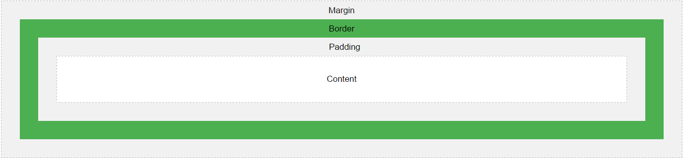

Boxmodell
I HTML kan alla element betraktas som "boxar" När man talar om design och layout i CSS används därför begreppet
"Boxmodell".
Detta är i princip en box som omsluter HTML elementet, och består av ett antal olika delar.
- Content - Innehållet i boxen, där text och bild syns
- Padding - Lägger man till padding vidgas området kring content. Denna är transparent.
- Border - Border är kanten som omsluter padding och content
- Border-color - Specifierar vilken färg på bordern som ska visas. Denna text använder
border-color: navy
- Border-style - Specifierar vilken typ av border som ska visas. Finns exempelvis
solid, ridge, dashed eller dotted. Denna text använder border-style: dotted
- Border-width - Specifierar hur bred bordern ska vara, denna text har border-width
3px
- Margin - Detta är området utanför bordern. Använder man margin vidgar man området som omsluter border.
Denna är
också transparent
Exempel
Illustration från W3schools.com

Detta är en box med 20px padding, 10px border-width, solid som border-style, black som border-color
och 20px margin
Det går även att använda outline i CSS, vilket är en linje som läggs runt elementet, men utanför bordern för att få denna att stå ut.
Text med grön, dotted, thick outline och svart border
Synlighet
Visibility
Visibility-egenskapen i CSS specifierar hurvida ett element ska vara synligt eller inte
Exempel (båda boxarna är satta med background: lightseagreen)
| Status |
Box |
| Visibility:visible |
|
| Visibility:hidden |
|
Clip

Display
Overflow